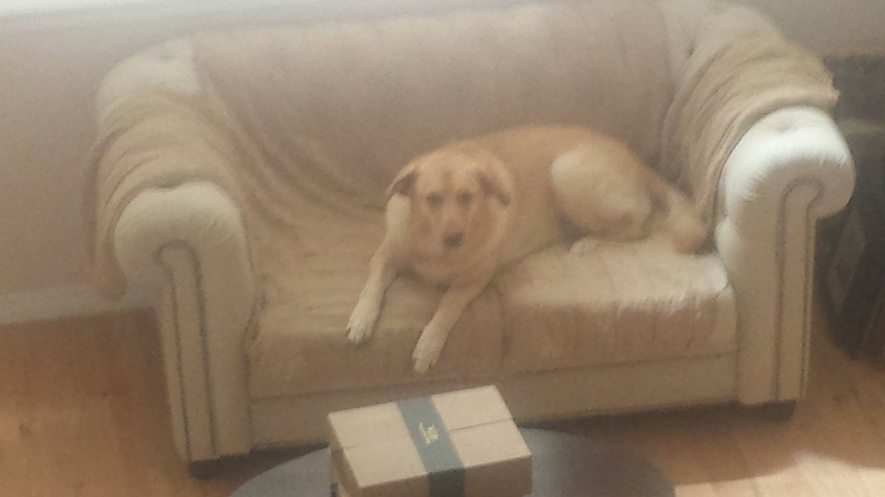
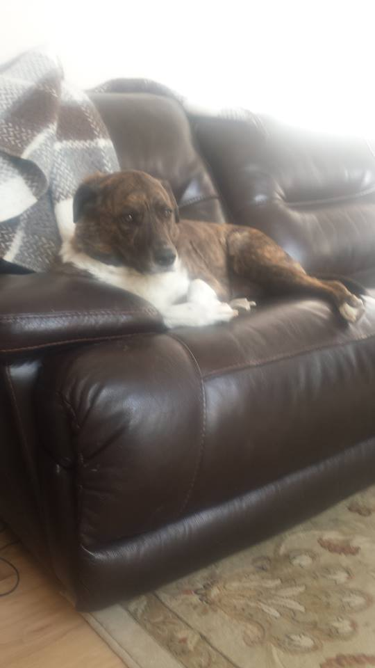

A little about me.
My name is Austen, but most people know me as peaches. Feel free to call me either. I was born in Colorado, but while I was pretty young i moved around a bit in USA, and also to Belguim and Portugal. I was young enough I don't remember it very well, but I do remember some bits and pieces. When I was 3 almost 4 we moved back to colorado. I'm twenty two years old, and 6'1. I've been growing my beard since Feburary of 2017. I don't really have any hobbies, but sometimes I like to play games. I have tons of friends. Honestly i feel like too many, because trying to see them all on a regular basis is a pain. But I'd be glad to become acquainted with you all. Lets do our best during these six months. Here's a picture of my two dogs.
 